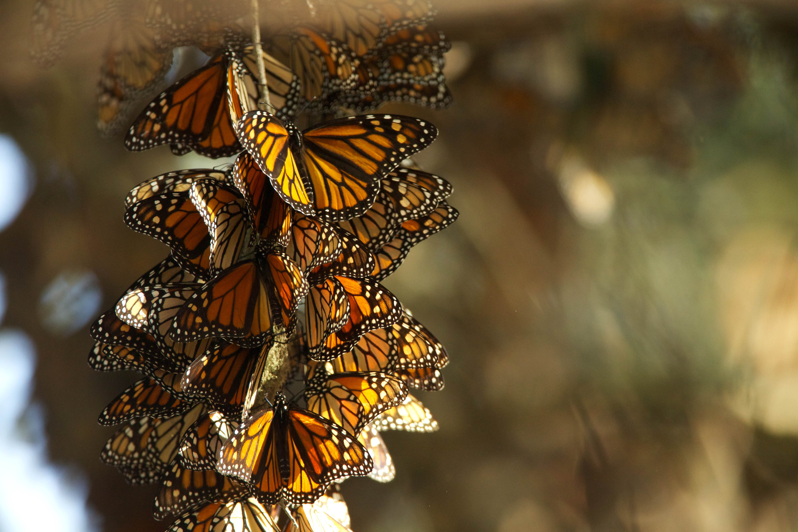
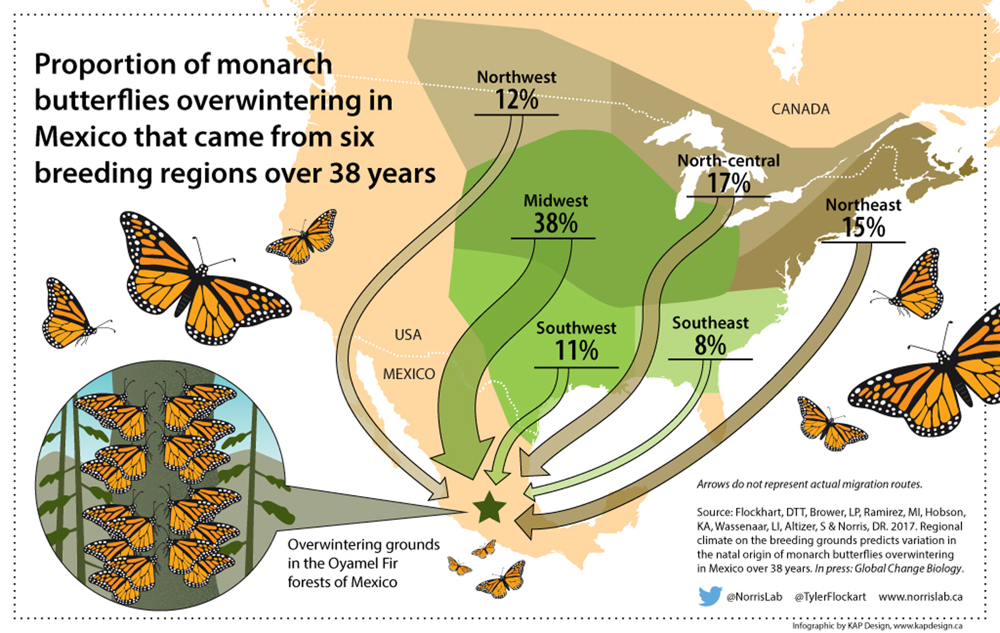

Monarch Butterfly Migration and Life Cycle
Delve into the captivating journey of the monarch butterfly, from lifecycle stages to their unique migration patterns.

The monarch butterfly undergoes one of the most remarkable migrations of any insect species, traveling thousands of miles from North America to central Mexico and back. This journey is not only a testament to their resilience but also to the delicate balance of ecosystems.
Monarchs have a special relationship with milkweed, a plant that is vital throughout their lifecycle. Milkweed serves as the only food source for monarch caterpillars, providing them with essential nutrients and a natural defense against predators, thanks to the toxic compounds in the plant that caterpillars have evolved to ingest and sequester.
Life Cycle Stages
The monarch butterfly's journey begins as a tiny egg, laid on the underside of milkweed leaves. Within a few days, these eggs hatch into larvae, or caterpillars, that immediately start to feed on the milkweed. This stage is crucial for the caterpillar to grow and accumulate energy for the next phases of its life. The caterpillar goes through five growth stages, known as instars, shedding its skin at each stage. After about two weeks of voracious eating, the caterpillar finds a safe spot to transform into a chrysalis. During the pupa stage inside the chrysalis, which lasts about 10 days, the caterpillar undergoes a remarkable transformation, emerging as an adult butterfly ready to feed on nectar, mate, and for females, lay eggs to continue the cycle.

Habitats and Conservation
Monarch butterflies are migratory insects that rely on a variety of habitats across North America. In the spring and summer, breeding habitats include fields, meadows, and gardens where milkweed and nectar sources are abundant. As the seasons change, monarchs embark on an extraordinary migration to overwintering sites in central Mexico's fir forests and California's eucalyptus, pine, and cypress groves, where they cluster together for warmth. The conservation of these habitats is paramount for the survival of the species. Efforts include protecting and restoring milkweed habitats across their migratory path, advocating for sustainable agricultural practices, and supporting community science projects to monitor populations. Everyone can contribute to monarch conservation by planting native milkweed and nectar plants, reducing pesticide use, and participating in habitat restoration projects.
Migration Marvel
The monarch butterfly's migration is one of the most spectacular natural phenomena on Earth. Each fall, millions of monarchs travel up to 3,000 miles from the United States and Canada to central Mexico, using a combination of environmental cues like the sun's position and geomagnetic fields to navigate. This journey is made by a generation that has never made the trip before, relying on instinct passed down through generations. In the spring, it takes multiple generations to return north, where the cycle begins anew. This incredible journey is not only a marvel of nature but a critical component of the ecosystems through which the monarchs travel, pollinating plants and providing food for other species. However, this migration is under threat from habitat loss, climate change, and pesticide use, making conservation efforts more vital than ever.
For more detailed exploration, watch this stunning video capturing the monarch's preparation for migration: